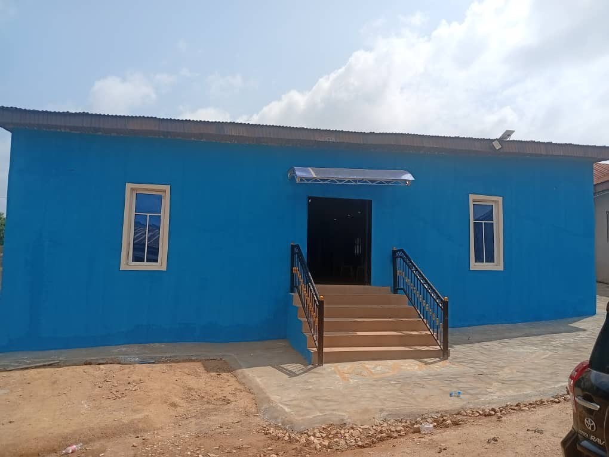
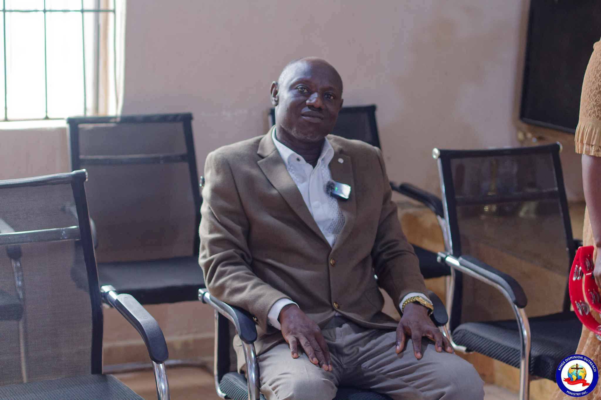
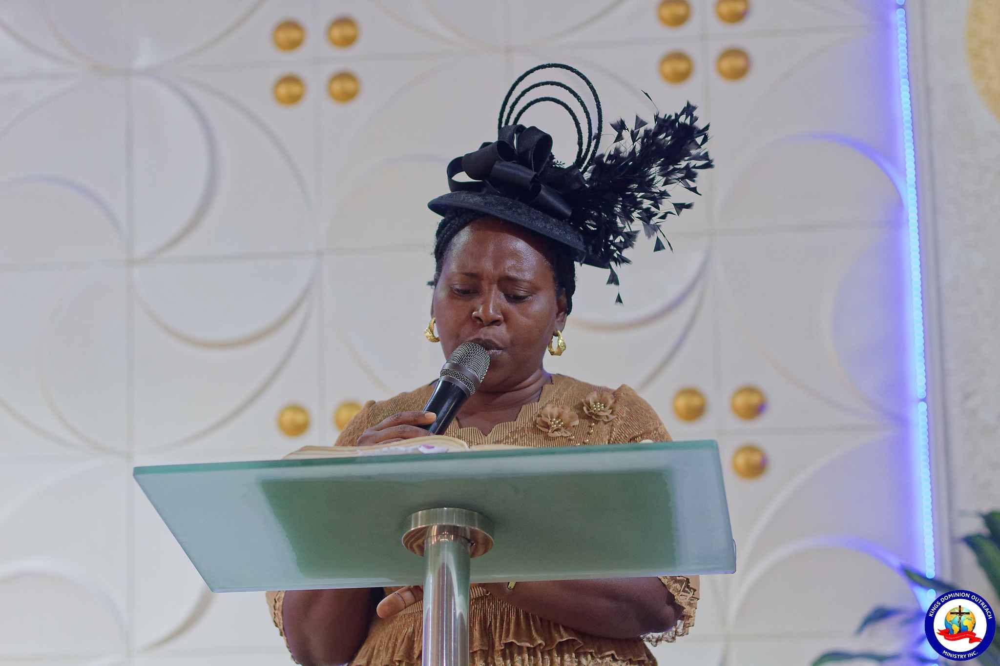

ABOUT KDOM
King's Dominio Outreach Ministrry (KDOM) is a fire brand church committed to winning souls nuturing believers, and impacting communities with the love and truth of christ.
we believe in the transforming power of God to restore lives, strengthen families, and raise leaders who will advance God's kingdom through service, outreach and leadership.


Called. Committed. Consistent.
King's Dominion Outreach Ministry was founded with a passion to see lives transformed and people brought into the knowledge and purpose of God.
Through divine inspiration and a clear mandate, the ministry continues to reach souls, raise leaders, strengthen families, and advance the Kingdom of God.
Pastor Lucas Dahunsi
SENIOR PASTORLeading With Purpose
Our leadership team is committed to serving with integrity, wisdom, and a heart for God's Kingdom.
Pastor Lucas Dahunsi
Senior PASTOR
Pastor Mrs Esther Dahunsi
WOMEN'S MINISTRY LEADERWe're Better Together
Join us as we fulfill God's purpose, reach lives, raise leaders, and advance His Kingdom.